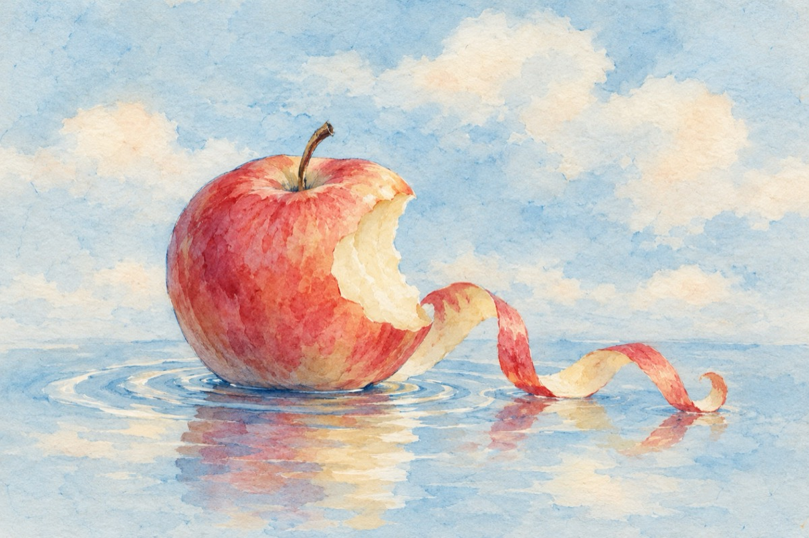

S-o crezi, mata, cucoană
S-o crezi, mata, cucoană
Că toanta n-are tont
Pantoful n-are talpă
Și cuiul este bont.
S-o crezi, mata, cucoană,
Că apa n-are viață,
Că merele n-au coajă
Și proștii nu învață
S-o crezi, mata, cucoană,
Ori ce-ai putea să crezi
N-ai cum s-ajungi o doamnă
Chiar dacă te visezi.
Ce-atâta îndoială,
Ea, toanta, are-un tont
Stimabila cucoană
Pantoful are talpă
Și cuiul nu e bont.
Iar apa are viață
Cum ai mata, cucoană,
Și proști-o știu și-nvață
Că ai mușcat din măr
Și l-au găsit în coajă!
Acesta este, doamnă, un mare adevăr!
Vasile Groza